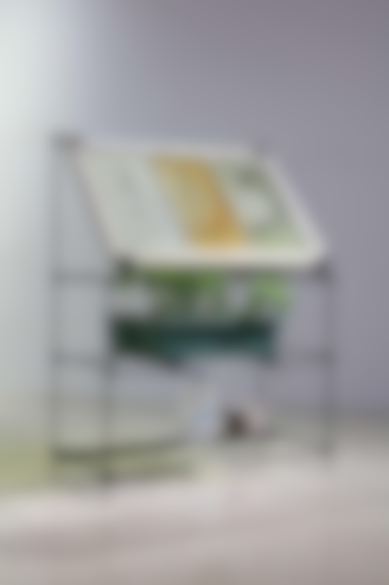
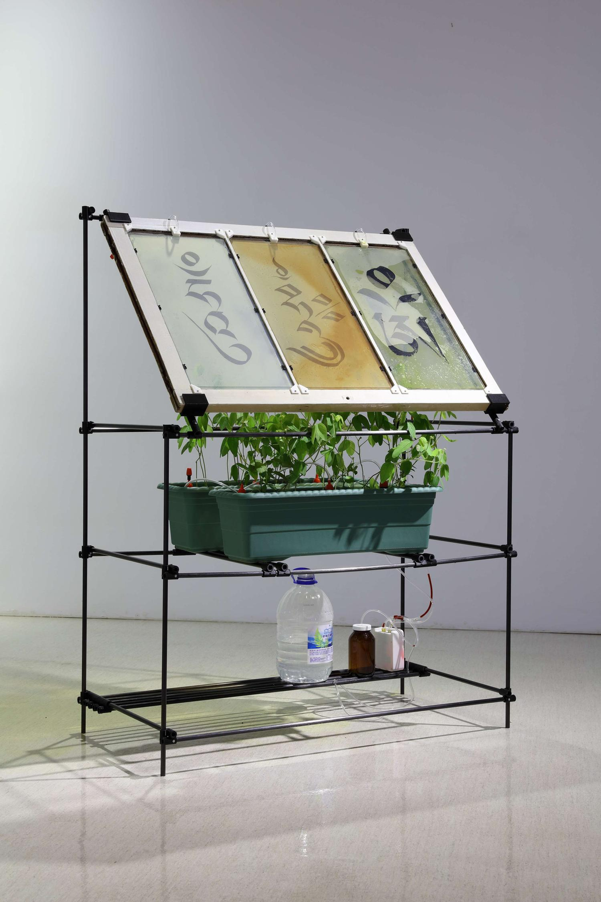
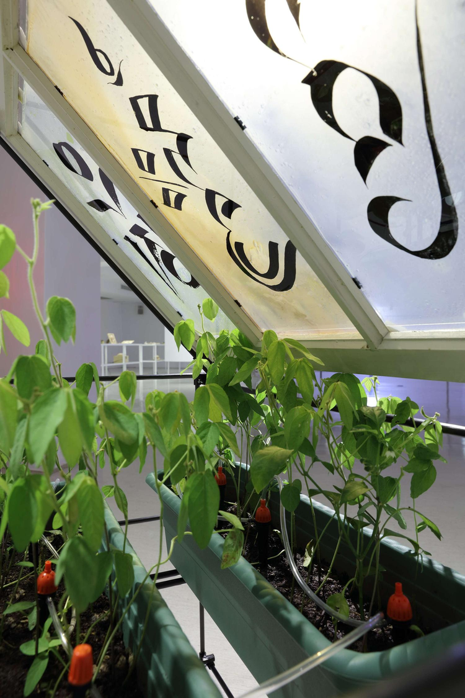
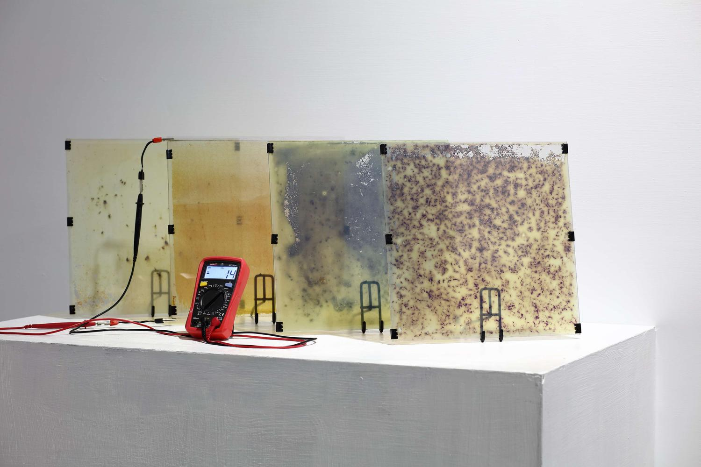
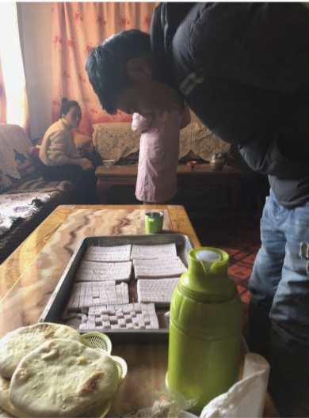
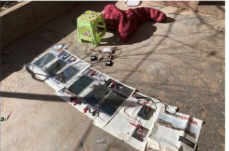
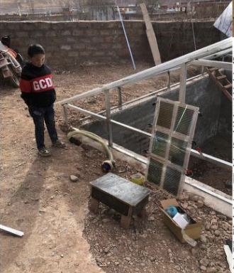
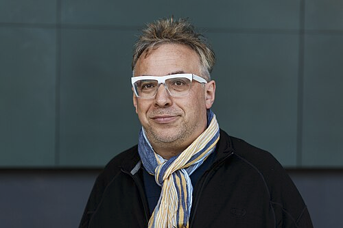

The Mind of a Greenhouse
溫室之心
Transformar un invernadero en una infraestructura híbrida: no es solo un espacio para cultivar plantas, sino también un laboratorio artístico, científico y tecnológico capaz de observar su entorno, producir datos y abrir preguntas sobre la relación entre naturaleza y tecnología.
Nangqên, Qinghai/Tíbet
3.700 metros de altitud
01
El proyecto se sitúa en un contexto extremo: una zona de inviernos largos y temperaturas muy bajas. Allí, cultivar vegetales frescos durante todo el año es difícil, por lo que el invernadero aparece como una solución material, social y ecológica.
Pero su valor no está solo en producir alimento: también funciona como obra, experimento, infraestructura comunitaria y red de datos.
Este trabajo analiza cómo la computación puede integrarse en sistemas vivos y territoriales.
En este caso, el invernadero funciona como una especie de organismo tecnológico:
capta información del ambiente, la transforma en datos y permite imaginar nuevas formas de convivencia entre plantas, seres humanos, energía y sistemas digitales.
捷惟施
Autores
Shi Wei Chieh
Artista, maker e investigador taiwanés cuyo trabajo cruza arte, tecnología, materiales experimentales, textiles inteligentes, energía solar DIY y comunidades de aprendizaje. Su práctica no entiende la tecnología como una herramienta cerrada o puramente industrial, sino como algo que puede abrirse, modificarse y conectarse con saberes locales.
Tsangsar Kunga
Fundador de la Escuela Tashi Getsen y líder en la construcción del invernadero, es quien aportó la caligrafía para los electrodos de las celdas solares.
Tsangsar Mohji
Coordinadora local, que realiza la logística necesaria en una zona tan remota y de gran altitud.
Dawa Konpu
Director de la escuela, encargado de la gestión educativa y operativa del lugar.
Tsangsar Metok
Fundadora del proyecto es la gestora o la persona que facilitó el terreno y el concepto inicial.
Winrar Rattanansuwan
Ingeniero meteorológico que se encargó del diseño del invernadero y que funcionará bajo las condiciones existentes.
02


Proyecto
The Mind of a Greenhouse es un proyecto desarrollado en 2018 que explora la idea de un invernadero autosustentable como un sistema “inteligente” o sensible. Su objetivo inicial fue construir una infraestructura capaz de producir alimentos durante todo el año para niñas y niños de la Tashi Getsen Charity School, enfrentando condiciones climáticas extremas que pueden llegar a temperaturas cercanas a los -30 °C.
The Mind of a Greenhouse
Lectura del proceso de creación, programación, montaje y funcionamiento del proyecto de Shih Wei Chieh a partir de la información disponible y de inferencias razonables sobre su implementación computacional.
Palabras Clave
Clima ExtremoInvernaderoEnergía SolarMontaje RemotoSensores
Yī
Èr
Sān
Problema Situado
Escuela en alta montaña, clima hostil y escasez de vegetales frescos como condición de diseño.
Diseño del Invernadero
Se articula un invernadero con componentes energéticos, sensado ambiental y decisiones programadas.
Montaje Y Operación
El sistema se instala en altura y convierte variables del entorno en comportamiento visible o funcional.

03
Proceso de creación y funcionamiento
1
Contextualización del espacio:
Lectura del territorio, altura, clima y necesidades alimentarias de la escuela. El problema ambiental define los límites técnicos del sistema.
2
Ideación y diseño material:
Se propone el invernadero como infraestructura híbrida cultivo, laboratorio, sistema tecnológico y obra. El diseño integra simulación climática, caligrafía local y química orgánica para desarrollar ventanas solares experimentales.
3
Programación y datos :
Se plantea una lógica de lectura y procesamiento de variables del entorno. La luz, el clima y la energía producida por las celdas solares pueden entenderse como datos que permiten evaluar el comportamiento del sistema.
4
Producción solar y componentes:
Se desarrollan celdas solares teñidas con plantas locales como porotos negros, sappanwood y goji negro. Estas superficies captan luz solar y permiten producir energía medible dentro del sistema.
5
Producción y montaje:
Se integran estructura física, ventanas solares, electrodos de grafeno y componentes energéticos. Los electrodos se diseñan a partir de caracteres caligráficos asociados a sonido, vida útil y campo magnético.
6
Funcionamiento del prototipo:
El sistema capta luz solar, la convierte en energía y sostiene el funcionamiento del invernadero como infraestructura experimental para cultivo, aprendizaje y comunidad.
04

Arquitectura
de Datos
Si la humedad baja o la temperatura supera cierto umbral, la obra responde.
Lógica inferida del sistema de control
1Un microcontrolador o placa base centraliza entradas ambientales y coordina salidas.
2Los sensores miden luz, humedad y temperatura como señales analógicas del entorno.
3El sistema convierte esas señales en datos digitales para compararlos con umbrales definidos.
4La programación condicional decide si debe activarse una respuesta mecánica, lumínica o acústica.
5La calibración corrige desvíos causados por la altura, el frío y las lecturas extremas de Nangqên.
Montaje Exhibición Y Experiencia Pública
Sustentabilidad Social
Funcionamiento invisible del sistema para la producción constante de alimentos para la escuela.
Interfaz Estética
Visualización del comportamiento de la “mente” del invernadero ante la comunidad local y los visitantes, consolidando la obra como un hito donde la computación simula una forma de conciencia biológica.



En síntesis, el proceso de creación de The Mind of a Greenhouse puede diagramarse como una cadena operativa compuesta por contexto territorial, diseño material, programación, calibración, montaje en altura y funcionamiento en tiempo real. Esa estructura permite explicar la obra desde su proceso productivo, que es justamente lo que pide la consigna.
Principios de Lev Manovich
Lev Manovich es catedrático titular en el Graduate Center de la City University of New York, y fundador y director del Cultural Analytics Lab. Es reconocido como uno de los pensadores más influyentes del mundo en los campos del arte digital, la cultura digital, la teoría de los medios y las humanidades digitales.

1REPRESENTACIÓN NÚMERICA
El invernadero convierte condiciones ambientales en datos: temperatura, humedad, luz, radiación solar y comportamiento climático. Estos datos pueden ser leídos por sensores, procesados digitalmente y compartidos mediante plataformas o registros.
El invernadero deja de ser solo un espacio físico y se transforma también en un sistema de datos
2MODULARIDAD
El proyecto está compuesto por partes conectadas: estructura del invernadero, plantas, sensores, sistema energético, software, datos, comunidad escolar, artistas y científicos.
La obra funciona como un conjunto de módulos que interactúan entre sí: naturaleza, tecnología y comunidad.
3AUTOMATIZACIÓN
Los sensores permiten que parte del sistema funcione sin intervención humana constante. El invernadero puede observar el ambiente, registrar información y generar respuestas a partir de los datos capturados.
La automatización aparece en la capacidad del sistema para medir y reaccionar frente a cambios ambientales.
4VARIABILIDAD
La obra no es siempre igual. Cambia según la luz, la temperatura, la humedad, el momento del día y las condiciones del entorno. Cada situación ambiental puede producir una experiencia diferente.
El proyecto varía porque depende de un ecosistema vivo y cambiante.
5TRANSCODIFICACIÓN
El proyecto traduce procesos naturales a lenguajes computacionales. La luz, el clima, la humedad y el crecimiento vegetal se transforman en datos, energía, visualizaciones o información compartible.
La transcodificación ocurre cuando fenómenos ecológicos se convierten en información digital y experiencia estética.
¿Puede un sistema tecnológico sentir o pensar?
The Mind of a Greenhouse muestra que la computación no solo sirve para crear imágenes, sonidos o interfaces digitales. También puede usarse para observar procesos vivos, traducir condiciones ambientales en datos y construir nuevas relaciones entre comunidad, tecnología y naturaleza.
El proyecto propone una tecnología situada: no una máquina cerrada ni una solución universal, sino una infraestructura experimental que responde a un lugar específico. Su valor creativo está en convertir un invernadero en una obra-red: un espacio donde cultivar alimentos, producir datos, aprender colectivamente y pensar otras formas de convivencia entre humanos, plantas, energía y territorio.
La obra también abre una pregunta importante: ¿puede un sistema tecnológico sentir o pensar? El invernadero no piensa como una persona, pero sí percibe, registra y responde. Por eso, el proyecto se acerca a la idea de una inteligencia no humana o una sensibilidad ambiental mediada por computación.